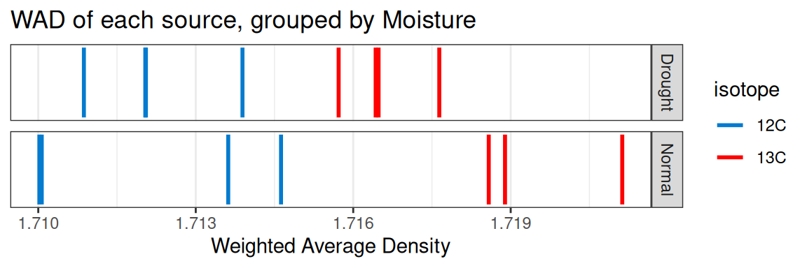
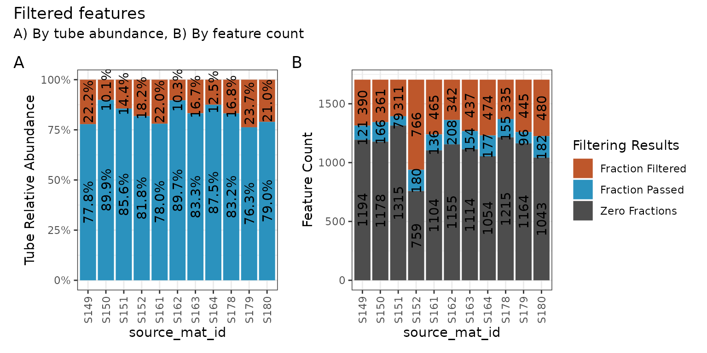
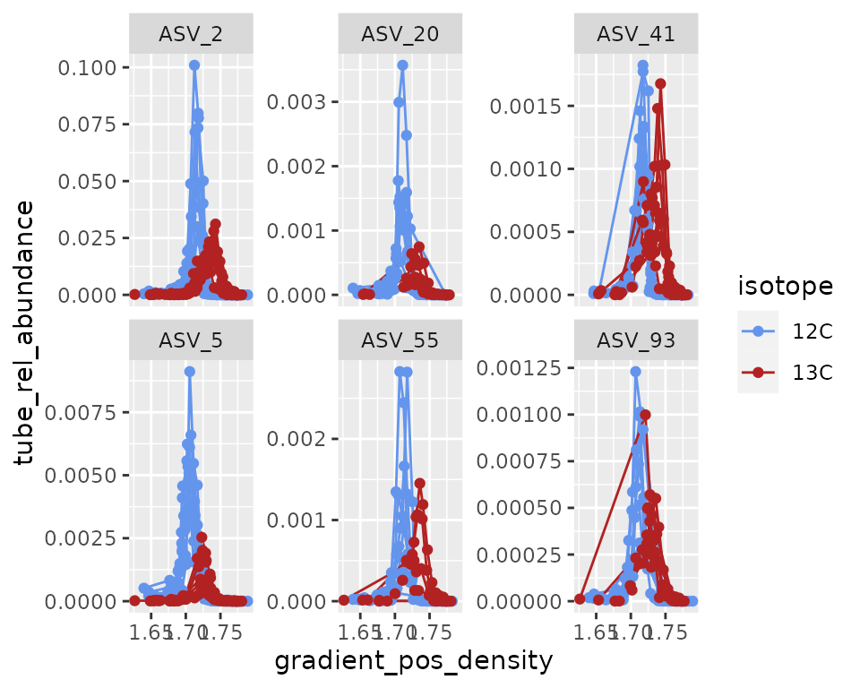

Background
A complete quantitative stable isotope probing (qSIP) workflow using
the qSIP2 package starts with three input files and ends
with calculated excess atom fraction (EAF) values along with a ton of
intermediate data. This vignette will be a high-level walk through of
the major steps with links to more specific vignettes where more detail
is appropriate.
The Input Files
Preparing and formatting the input files is often the most tedious
part of any analysis. Our goal with the rigid (and opinionated)
requirements imposed by qSIP2 will hopefully streamline the
creation of these files, and automated validation checks can remove many
of the common sources of error or confusion.
Source Data
The source data is the highest level of metadata with a row
corresponding to each original experimental or source material object.
An example source dataframe is included in the qSIP2
package called example_source_df.
| The first few rows of `example_source_df` | |||||
| source | total_copies_per_g | total_dna | Isotope | Moisture | isotopolog |
|---|---|---|---|---|---|
| S149 | 34838665 | 74.46539 | 12C | Normal | glucose |
| S150 | 53528072 | 109.01522 | 12C | Normal | glucose |
| S151 | 95774992 | 182.16852 | 12C | Normal | glucose |
| S152 | 9126192 | 23.68963 | 12C | Normal | glucose |
| S161 | 41744046 | 67.62552 | 12C | Drought | glucose |
| S162 | 49402713 | 94.21217 | 12C | Drought | glucose |
There are a few required columns for valid source data including a unique ID, some measure of quantitative abundance for the source material (either total DNA or qPCR copies), and an isotope and isotopolog designation for the substrate that had the label.
| `source_df` | |||||
| source | total_copies_per_g | total_dna | Isotope | Moisture | isotopolog |
|---|---|---|---|---|---|
| S149 | 34838665 | 74.46539 | 12C | Normal | glucose |
| S150 | 53528072 | 109.01522 | 12C | Normal | glucose |
| S151 | 95774992 | 182.16852 | 12C | Normal | glucose |
| S152 | 9126192 | 23.68963 | 12C | Normal | glucose |
| S161 | 41744046 | 67.62552 | 12C | Drought | glucose |
| S162 | 49402713 | 94.21217 | 12C | Drought | glucose |
Once the dataframe is ready, the next step is to convert it to a
qsip_source_data object. This is one of the main
qSIP2 objects to hold and validate the data.
source_object <- qsip_source_data(example_source_df,
isotope = "Isotope",
isotopolog = "isotopolog",
source_mat_id = "source"
)
class(source_object)
#> [1] "qsip_source_data" "S7_object"This object modifies some of the column names to standard names as supplied in the above function.
colnames(example_source_df)
#> [1] "source" "total_copies_per_g" "total_dna"
#> [4] "Isotope" "Moisture" "isotopolog"
colnames(source_object@data)
#> [1] "isotope" "isotopolog" "source_mat_id"
#> [4] "total_copies_per_g" "total_dna" "Moisture"See vignette("source_data") for more details.
Sample Data
The sample metadata is the next level of detail with one row for each fraction, or one row for each set of fastq files that were sequenced.
| `example_sample_df` | |||||
| sample | source | Fraction | density_g_ml | dna_conc | avg_16S_g_soil |
|---|---|---|---|---|---|
| 149_F1 | S149 | 1 | 1.778855 | 0.000000000 | 4473.7081 |
| 149_F2 | S149 | 2 | 1.773391 | 0.000000000 | 986.6581 |
| 149_F3 | S149 | 3 | 1.765742 | 0.000000000 | 4002.7026 |
| 149_F4 | S149 | 4 | 1.759185 | 0.000000000 | 3959.7283 |
| 149_F5 | S149 | 5 | 1.752629 | 0.001241303 | 5725.7319 |
| 149_F6 | S149 | 6 | 1.746072 | 0.012815610 | 7566.2722 |
Again, there are several necessary columns for valid sample data,
including a unique sample ID, the source they came from, the fraction
ID, the fraction density and a measure of abundance in that fraction
(total DNA or qPCR copy number). An additional column that can be
derived is the percent abundance of your total sample that is found in
each of the fractions. The add_gradient_pos_rel_amt()
function can help calculate that by dividing each fraction abundance by
the total abundance for each source and putting in a
gradient_pos_rel_amt column.
sample_df <- example_sample_df |>
add_gradient_pos_rel_amt(source_mat_id = "source", amt = "avg_16S_g_soil")| Sums of relative abundance equal 1 | ||
| source | qPCR_copies | Sum Relative Abundance |
|---|---|---|
| S149 | 34838665 | 1 |
| S150 | 53528072 | 1 |
| S151 | 95774992 | 1 |
| S152 | 9126192 | 1 |
| S161 | 41744046 | 1 |
| S162 | 49402713 | 1 |
Again, we make a qSIP2 object for this data, this time
as a qsip_sample_data object.
sample_object <- qsip_sample_data(sample_df,
sample_id = "sample",
source_mat_id = "source",
gradient_position = "Fraction",
gradient_pos_density = "density_g_ml",
gradient_pos_amt = "avg_16S_g_soil",
gradient_pos_rel_amt = "gradient_pos_rel_amt"
)
class(sample_object)
#> [1] "qsip_sample_data" "S7_object"See vignette("sample_data") for more details and
relevant visualizations.
Feature Data
Finally, the last of the three necessary input files is a feature abundance table, aka “OTU table” or “ASV table”. The format of this dataframe has the unique feature IDs in the first column, and an additional column for each sample. Each row then contains the whole number (non-normalized) counts of each feature in each sample.
For now, the validation step defaults to requiring all values be
positive integers, but other type options include
coverage (for working with MAGs or metagenomes) or
relative if you already have relative abundances.
example_feature_df[1:6] |>
head() |>
gt_func(title = "First bit of `example_feature_df`")| First bit of `example_feature_df` | |||||
| ASV | 149_F1 | 149_F2 | 149_F3 | 149_F4 | 149_F5 |
|---|---|---|---|---|---|
| ASV_1 | 1245 | 376 | 582 | 1258 | 692 |
| ASV_2 | 1471 | 569 | 830 | 1373 | 737 |
| ASV_3 | 342 | 152 | 211 | 389 | 218 |
| ASV_4 | 288 | 119 | 161 | 294 | 157 |
| ASV_5 | 317 | 108 | 95 | 292 | 164 |
| ASV_6 | 201 | 73 | 130 | 250 | 112 |
feature_object <- qsip_feature_data(example_feature_df,
feature_id = "ASV"
)
class(feature_object)
#> [1] "qsip_feature_data" "S7_object"See vignette("feature_data") for more details and
relevant visualizations.
The qsip_data Object
The qsip_data class is the main workhorse object in the
qSIP2 package. It is built from validated versions of the
three previous objects, and is meant to be a self-contained object with
all of the necessary information for analysis.
The design of it is that it is both input for workflow functions, as well as output. For this reason, you can feel safe overwriting the object with new analysis as you work, or you can create a new object each step if you prefer.
qsip_object <- qsip_data(
source_data = source_object,
sample_data = sample_object,
feature_data = feature_object
)
#> There are 15 source_mat_ids, and they are all shared between the source and sample objects
#> There are 284 sample_ids, and they are all shared between the sample and feature objects
class(qsip_object)
#> [1] "qsip_data" "S7_object"This function will report if all source_mat_ids are
shared between the source and sample data, and if all
sample_ids are shared between the sample and feature data.
If it reports there are some unshared ids, you can access them with
show_unshared_ids(qsip_object), but note that it is just a
warning and does not stop the creation of the qSIP object.
Behind the scenes, creation of this object also runs some other calculations, particularly getting the weighted-average density (WAD) for each feature in each source, and also the tube relative abundance of each feature. With these, certain visualizations can be made.
plot_source_wads(qsip_object, group = "Moisture")
plot_sample_curves(qsip_object)
Main Workflow
Now that we have a validated qsip_data object, we can
start the main workflow consisting of comparison grouping, filtering,
resampling and finally calculating EAF values.
Comparison Grouping
Your qsip_data object likely contains all of your data,
but you may only want to run comparisons on certain subsets. The
show_comparison_groups() function attempts to identify and
suggest the sources you may want to compare.
show_comparison_groups(qsip_object,
group = "Moisture",
isotope = "isotope",
source_mat_id = "source_mat_id"
)| Output of `show_comparison_groups()` | ||
| Moisture | 12C | 13C |
|---|---|---|
| Normal | S149, S150, S151, S152 | S178, S179, S180 |
| Drought | S161, S162, S163, S164 | S200, S201, S202, S203 |
The group argument here is the most important as it will
define the rows that it thinks constitute a comparison. The
isotope argument is what defines the labeled and unlabeled
values for the comparisons. This can be more complex, particularly if
you have more than one isotopolog, and details will be made available in
the future in another vignette.
So if we work with the “Normal” moisture groups we likely want to use S149, S150, S151 and S152 for the unlabeled and compare to S178, S179 and S180 for the labeled.
Sometimes you may also want to compare the specific labeled samples
in a group to all unlabeled. The qSIP2 package has
a convenient way to get those by using the
get_all_by_isotope() function.
get_all_by_isotope(qsip_object, "12C")
#> [1] "S149" "S150" "S151" "S152" "S161" "S162" "S163" "S164"Filter Features
Rather than filter up front, it might make the most sense to run comparison specific filtering with presence requirements for just the sources you are comparing.
The run_feature_filter() function takes a different set
of fraction and source requirements for the labeled and unlabeled data,
allowing you to precisely tailor your filtering results.
qsip_data objects as you go, it might make sense to create
two versions here, one for the Normal and one for the Drought moisture
treatments.
qsip_normal <- run_feature_filter(qsip_object,
unlabeled_source_mat_ids = get_all_by_isotope(qsip_object, "12C"),
labeled_source_mat_ids = c("S178", "S179", "S180"),
min_unlabeled_sources = 6,
min_labeled_sources = 3,
min_unlabeled_fractions = 6,
min_labeled_fractions = 6
)
#> There are initially 2030 unique feature_ids
#> 1705 of these have abundance in at least one fraction of one source_mat_id
#> =+=+=+=+=+=+=+=+=+=+=+=+=+=+=+=+=+=+=+=+=+=+=+=+=+
#> Filtering feature_ids by fraction...
#> 1519 unlabeled and 1417 labeled feature_ids were found in zero fractions in at least one source_mat_id
#> 1440 unlabeled and 830 labeled feature_ids were found in too few fractions in at least one source_mat_id
#> 299 unlabeled and 209 labeled feature_ids passed the fraction filter
#> In total, 346 unique feature_ids passed the fraction filtering requirements...
#> =+=+=+=+=+=+=+=+=+=+=+=+=+=+=+=+=+=+=+=+=+=+=+=+=+
#> Filtering feature_ids by source...
#> 47 unlabeled and 137 labeled feature_ids failed the source filter because they were found in zero sources
#> 196 unlabeled and 127 labeled feature_ids failed the source filter because they were found in too few sources
#> 103 unlabeled and 82 labeled feature_ids passed the source filter
#> =+=+=+=+=+=+=+=+=+=+=+=+=+=+=+=+=+=+=+=+=+=+=+=+=+
#> In total, 64 unique feature_ids passed all fraction and source filtering requirementsHere, we can see our rather strict filtering removed all but 64 features from the dataset. We can visualize the filtering results on a per-source basis.
plot_filter_gradient_position(qsip_normal)
Although a large number of features were removed, we can tell that the 64 that remained actually still make up a large proportion of the total abundance in each sample. In A above, the retained features (in blue) make up ~80-85% of the total data, while the removed data (orange) is the remaining ~15-20%.
In B, we can see that a surprisingly large number of
features are found 0 times in many sources (gray) and will therefore
never be present regardless of our filtering choices. And although there
are are ~100-200 features that passed the filtering requirements (blue),
our requirement that min_unlabeled_sources = 6 and
min_labeled_sources = 3 means that only the features
present in many of the blue slices will be retained, leaving only 64
total.
Let’s do the same comparison with the drought samples.
qsip_drought <- run_feature_filter(qsip_object,
unlabeled_source_mat_ids = get_all_by_isotope(qsip_object, "12C"),
labeled_source_mat_ids = c("S200", "S201", "S202", "S203"),
min_unlabeled_sources = 6,
min_labeled_sources = 3,
min_unlabeled_fractions = 6,
min_labeled_fractions = 6
)
#> There are initially 2030 unique feature_ids
#> 1877 of these have abundance in at least one fraction of one source_mat_id
#> =+=+=+=+=+=+=+=+=+=+=+=+=+=+=+=+=+=+=+=+=+=+=+=+=+
#> Filtering feature_ids by fraction...
#> 1691 unlabeled and 1558 labeled feature_ids were found in zero fractions in at least one source_mat_id
#> 1440 unlabeled and 1212 labeled feature_ids were found in too few fractions in at least one source_mat_id
#> 299 unlabeled and 285 labeled feature_ids passed the fraction filter
#> In total, 367 unique feature_ids passed the fraction filtering requirements...
#> =+=+=+=+=+=+=+=+=+=+=+=+=+=+=+=+=+=+=+=+=+=+=+=+=+
#> Filtering feature_ids by source...
#> 68 unlabeled and 82 labeled feature_ids failed the source filter because they were found in zero sources
#> 196 unlabeled and 171 labeled feature_ids failed the source filter because they were found in too few sources
#> 103 unlabeled and 114 labeled feature_ids passed the source filter
#> =+=+=+=+=+=+=+=+=+=+=+=+=+=+=+=+=+=+=+=+=+=+=+=+=+
#> In total, 89 unique feature_ids passed all fraction and source filtering requirementsHere, we can see our rather strict filtering removed all but 64 features from the dataset. We can visualize the filtering results on a per-source basis.
plot_filter_gradient_position(qsip_drought)
Resampling
In order to calculate the confidence interval for the EAF values, we first need to run a resampling/bootstrapping procedure on the WAD values.
qsip_normal <- run_resampling(qsip_normal,
resamples = 1000,
with_seed = 17,
progress = FALSE
)As this step requires some random sampling it is good practice to set the “seed”. Rather than doing this outside of the function, you can pass the seed as an argument. If you leave blank, it will generate a random seed. The seed will generate the same results each time you run the resampling process.
qsip_normal_17_again <- run_resampling(qsip_normal,
resamples = 1000,
with_seed = 17,
progress = FALSE
)
# two runs are identical
identical(qsip_normal, qsip_normal_17_again)
#> [1] TRUE
identical(qsip_normal@resamples$l[[334]], qsip_normal_17_again@resamples$l[[334]])
#> [1] TRUE
# but individual resamplings within are different
identical(qsip_normal@resamples$l[[1]], qsip_normal@resamples$l[[2]])
#> [1] FALSE
qsip_drought <- run_resampling(qsip_drought,
resamples = 1000,
with_seed = 17,
progress = FALSE
)EAF Calculations
And we are finally at the last main step, calculating and summarizing
the excess atom fraction (EAF) values. There are two functions to run,
the first (run_EAF_calculations()) that calculate EAF for
the observed data and all resamplings, and the second
(summarize_EAF_values()) that summarizes that data at a
chosen confidence interval.
We’ll also mutate() to add the original Moisture
condition to each dataframe before we combine them.
qsip_normal <- run_EAF_calculations(qsip_normal)
qsip_drought <- run_EAF_calculations(qsip_drought)
normal <- summarize_EAF_values(qsip_normal, confidence = 0.9) |>
mutate(Moisture = "Normal")
#> Confidence level = 0.9
drought <- summarize_EAF_values(qsip_drought, confidence = 0.9) |>
mutate(Moisture = "Drought")
#> Confidence level = 0.9
eaf <- rbind(normal, drought)We can plot the top 25 by each moisture condition.
eaf |>
group_by(Moisture) |>
slice_max(observed_EAF, n = 25) |>
ggplot(aes(y = reorder(feature_id, observed_EAF), x = mean_resampled_EAF)) +
geom_errorbar(aes(
xmin = lower, xmax = upper,
color = ifelse(lower > 0, "cornflowerblue", "gray10")
)) +
geom_point(color = "gray30") +
geom_vline(xintercept = 0) +
scale_color_identity() +
theme(legend.position = "none") +
facet_wrap(~Moisture, ncol = 2)
The plot_feature_curves() function allows us to plot the
tube relative abundances for specific feature IDs. Let’s look at the top
few.
plot_feature_curves(qsip_normal,
feature_ids = c("ASV_55", "ASV_20", "ASV_93", "ASV_41", "ASV_2", "ASV_5")
)